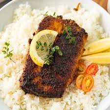

Blackened Mahi Mahi

Description
Blackened mahi mahi comes together in just minutes with an easy homemade
seasoning blend and a few minutes under the broiler for a deliciously
simple dinner.
Ingredients
- mahi mahi filets (fresh or frozen)
-
blackening spices: smoked paprika, garlic powder, onion powder, brown or
coconut sugar, cayenne, salt, pepper, basil, oregano, parsley
- avocado oil spray
- lime wedges for serving
Steps
-
Start by preheating the broiler in the oven. The top rack should be
positioned in the upper third of the oven.
- Pat the filets dry and lightly spray with the avocado oil.
-
Mix the blackening spices together in a small bowl. Press the seasoning
into the fish generously coating both sides of the filets.
-
Place the mahi mahi in a baking dish and broil for about 10 minutes
until cooked through and flaky.
-
Cooking time will vary depending on the thickness of the filets so start
checking around the 7-8 minute mark. The flesh should easily flake apart
when it's cooked through. Don't overcook as mahi mahi tends to get
rubbery if cooked too long.